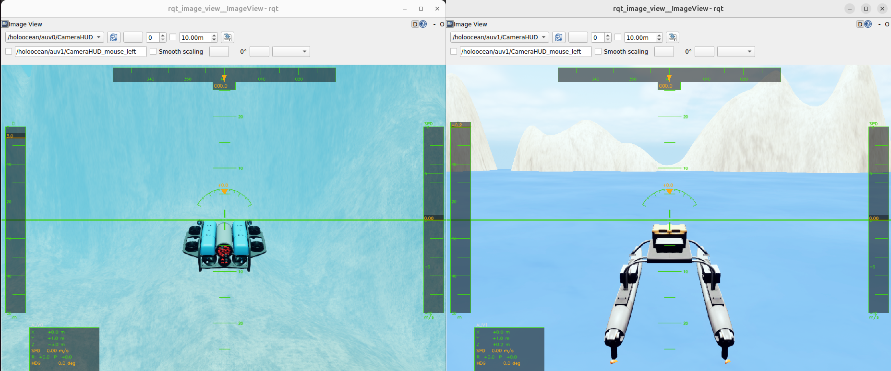
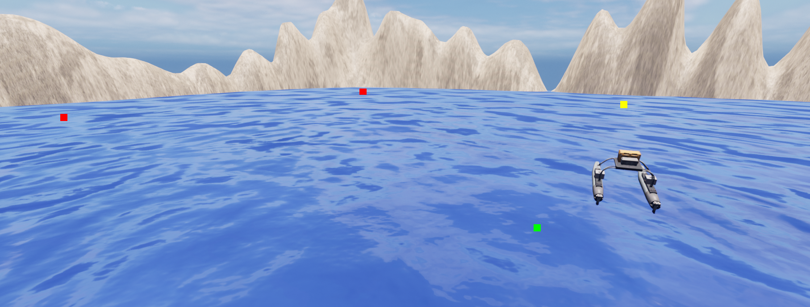

水域载具 ROS2 接口
针对高保真海洋机器人模块 HoloOcean 的 ROS 2 集成方案。该软件包将 HoloOcean Python API 与 ROS 2 网络连接起来，以 Topic（话题）形式发布传感器数据，并通过 Subscription（订阅）和 Service（服务）接收控制指令。
HoloOcean ROS (0.0.1) 新特性
- 改进了游戏手柄（joystick）示例
- 新增多代理（multi-agent）游戏手柄示例
- 简化了代理指令（弃用
command/control话题，改用command/agent） - 新增传感器旋转指令
- 修复了少量错误并改进了 Docker 配置
- 软件包
软件包
| 软件包 | 描述 |
|---|---|
holoocean_main |
核心仿真节点：加载场景并施加环境更新节拍 |
holoocean_interfaces |
自定义 ROS 2 消息与服务定义 |
holoocean_examples |
示例节点：操纵杆控制、航点跟踪、深度/航向指令 |
先决条件
注意： 请避免在 ROS 2 和 HoloOcean 中使用 Python 虚拟环境（如 Conda），因为这可能导致运行时及依赖项问题。
安装
Docker（推荐）
请参阅 Docker 开发环境 获取设置说明。提供开发和运行时两种配置。
从源码安装
安装 HoloOcean 后，将此仓库克隆到您的 ROS 2 工作空间中：
cd ~
git clone https://github.com/OpenHUTB/ros2.git
cd ~/ros2/src/water
source /opt/ros/humble/setup.bash
conda activate nn_3.8
colcon build
source install/setup.bashcolcon build 报错：ModuleNotFoundError: No module named 'catkin_pkg'
# sudo apt-get install python3-catkin-pkg快速入门
ros2 launch holoocean_main holoocean_launch.py示例
操纵杆控制
使用 Joy_linux 包通过操纵杆控制 HoloOcean 中的代理。
ros2 launch holoocean_examples joy_launch.py请参阅水域载具示例，获取完整的设置说明、按键映射及配置参考。

航点跟踪
根据预设的航点列表控制水面船舶。
ros2 launch holoocean_examples waypoint_launch.py
深度、航向及速度指令
利用 Fossen 控制器向鱼雷型 AUV 发送深度、航向及速度指令。
ros2 launch holoocean_examples command_launch.py节点引用：holoocean_node
加载场景 JSON 文件，启动 HoloOcean 环境，并在后台线程中驱动其运行（执行 tick 操作）。
订阅的话题
| 话题 | 类型 | 描述 |
|---|---|---|
command/agent |
AgentCommand |
针对所有代理的推进器/执行器指令（对于福森代理，frame_id 设为 body 的消息会被路由至福森的 set_u_control 接口） |
command/sensor |
SensorCommand |
传感器配置指令（例如：摄像头旋转） |
depth |
DesiredCommand |
自动驾驶模式的深度设定值 |
heading |
DesiredCommand |
自动驾驶模式的航向设定值 |
speed |
DesiredCommand |
自动驾驶模式的速度设定值 |
debug/points |
visualization_msgs/Marker |
在仿真中绘制的调试点 |
发布的话题
| 话题 | 类型 | 描述 |
|---|---|---|
<agent>/<SensorName> |
varies | 每个代理的传感器数据（见下文） |
/clock |
rosgraph_msgs/Clock |
模拟时间 |
传感器话题名称遵循 <agent_name>/<sensor_name> 的格式。如果场景文件中未指定传感器名称，则默认使用传感器类型名称。
服务
| 服务 | 类型 | 描述 |
|---|---|---|
reset |
std_srvs/Trigger |
重置模拟环境 |
control_mode |
SetControlMode |
更改代理的控制模式 |
参数
| 参数 | 类型 | 默认值 | 描述 |
|---|---|---|---|
scenario_path |
string | "" |
场景 JSON 文件的路径 |
relative_path |
bool | true |
相对于包的共享目录解析 scenario_path |
show_viewport |
bool | true |
显示虚幻引擎视窗 |
draw_arrow |
bool | true |
在模拟中为每个福森代理绘制一个朝向箭头。 |
render_quality |
int | -1 |
渲染质量：0 = 低，1 = 普通，2 = 高。-1 = 默认 |
publish_commands |
bool | true |
将计算出的控制面指令发布回 ROS |
记录传感器数据
ros2 bag record /holoocean/auv0/RotationSensor /holoocean/auv0/LocationSensor有关更多信息，请参阅 ROS 2 bag 文档。
注意
- 模拟时间可能比实际时间（wall time）运行得更快或更慢。请使用
/clock话题将节点与仿真时间同步。